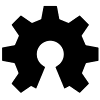

Linux
Electronics / Hardware
Other Code

Java / Android
3D Designs
- Robjects - Toyota headrest mount (Diesel powered Arduino!)
- Toyota headrest camera mount
- Valentines - 8 Bit Arduino Heart
- OpenScad Top Hat
- Font - Kirsty
- The Castle Back To School Set
- Steampunk Glasses Lense Mod
- Fluid Circuit - Caterpillar/Bug/Bee
- Festive Cracker Printability and Scale Mod
- Printable Signal White Cane